WS18 — Time Ki Asli Value Kya Hai?
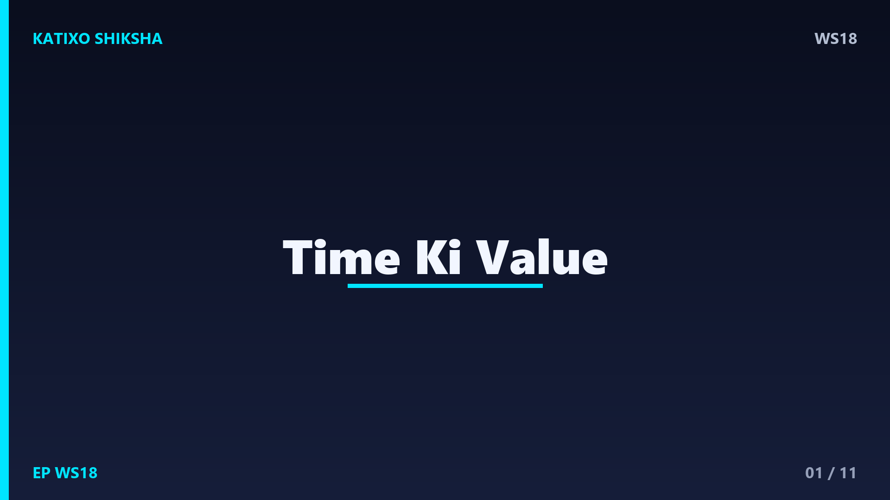
Slide 1दोस्तों, एक सवाल — क्या तुम्हें कभी ऐसा लगा है कि दिन कहाँ निकल गया पता ही नहीं चला? सुबह से शाम हो गई, पर ऐसा लगता है कुछ किया ही नहीं। ये है Katixo KhojLab, और आज की कहानी है हमारे सबसे कीमती खज़ाने के बारे में — time. पैसे खो जाएँ तो वापस आ सकते हैं, पर बीता हुआ एक second कभी वापस नहीं आता। चलो आज एक कहानी से समझते हैं कि समय की असली value क्या है।
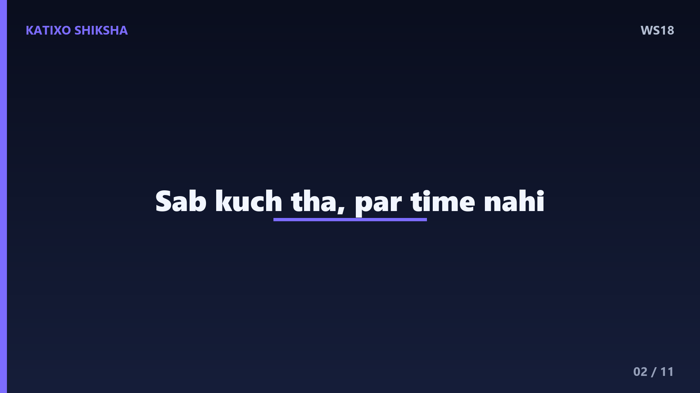
Slide 2एक गाँव में एक अमीर सेठ रहता था। उसके पास सब कुछ था — पैसा, गाड़ी, बड़ा घर। पर वो हमेशा कहता — मेरे पास time नहीं है। एक दिन वो बहुत बीमार पड़ गया। डॉक्टर ने कहा — सेठजी, अब आपके पास सिर्फ़ कुछ महीने हैं। सेठ रोने लगा और बोला — मैं अपनी सारी दौलत दे दूँगा, बस मुझे थोड़ा और time दे दो। पर डॉक्टर ने कहा — समय वो चीज़ है जो दुनिया का कोई पैसा नहीं खरीद सकता।
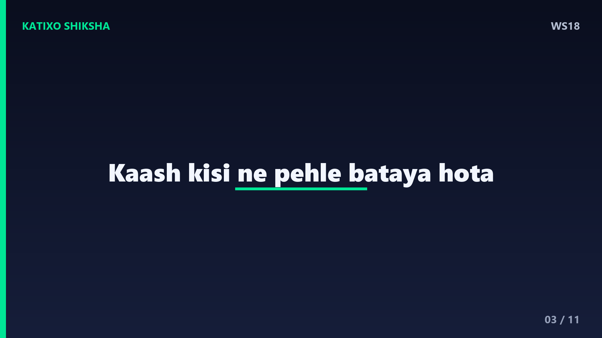
Slide 3उस दिन सेठ को एक बात समझ आई। वो सोचने लगा — मैंने पूरी ज़िंदगी पैसा कमाने में लगा दी, पर अपने बच्चों के साथ कभी बैठा ही नहीं। मैंने सूरज को उगते कभी नहीं देखा, दोस्तों से दिल खोलकर कभी बात नहीं की। मेरे पास सब था, पर जो सबसे कीमती था — वो time — मैंने बर्बाद कर दिया। काश कोई मुझे पहले बताता कि समय ही असली दौलत है।
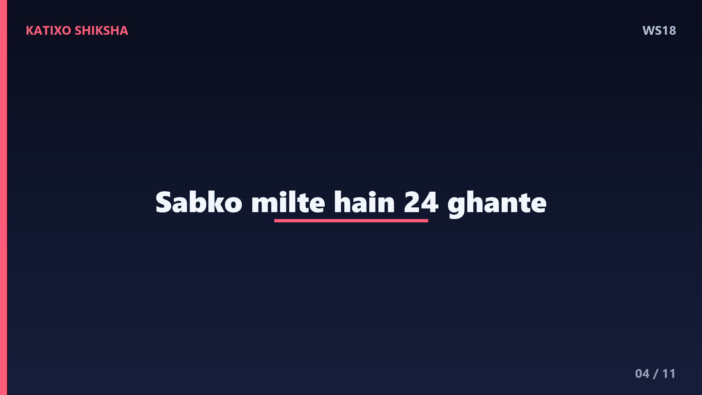
Slide 4Lesson नंबर एक — time तुम्हारी ज़िंदगी की सबसे limited चीज़ है। सोचो, हर इंसान को दिन में बराबर चौबीस घंटे मिलते हैं — चाहे अमीर हो या गरीब। फ़र्क सिर्फ़ इतना है कि कौन उन घंटों का क्या करता है। एक student जो रोज़ सिर्फ़ एक घंटा extra पढ़ता है, साल में तीन सौ पैंसठ घंटे आगे निकल जाता है। Time को respect दोगे, तो time तुम्हें ऊँचाई पर ले जाएगा।
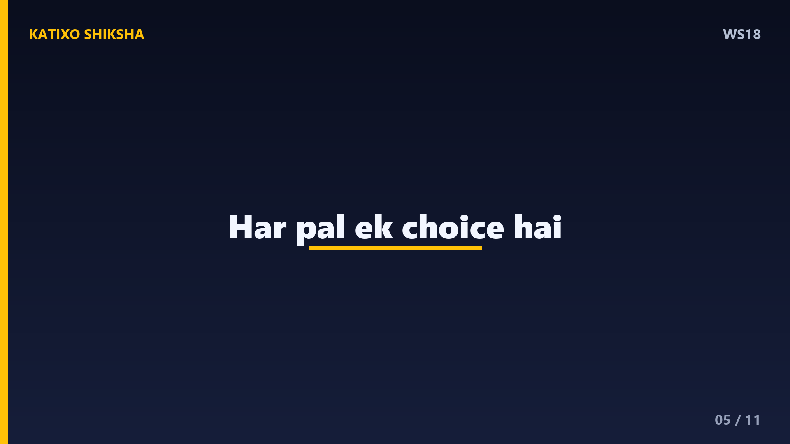
Slide 5Lesson नंबर दो — हर पल एक decision है। जब तुम कुछ करने को कहते हो बाद में कर लूँगा, तो असल में तुम अपना आज का time फेंक रहे हो। एक concept है जिसे कहते हैं opportunity cost — मतलब, जो time तुम scroll करने में लगाते हो, वो वही time है जो तुम अपने सपने पर लगा सकते थे। हर मिनट एक choice है — और वो choice ही धीरे-धीरे तुम्हारा future बनाती है।
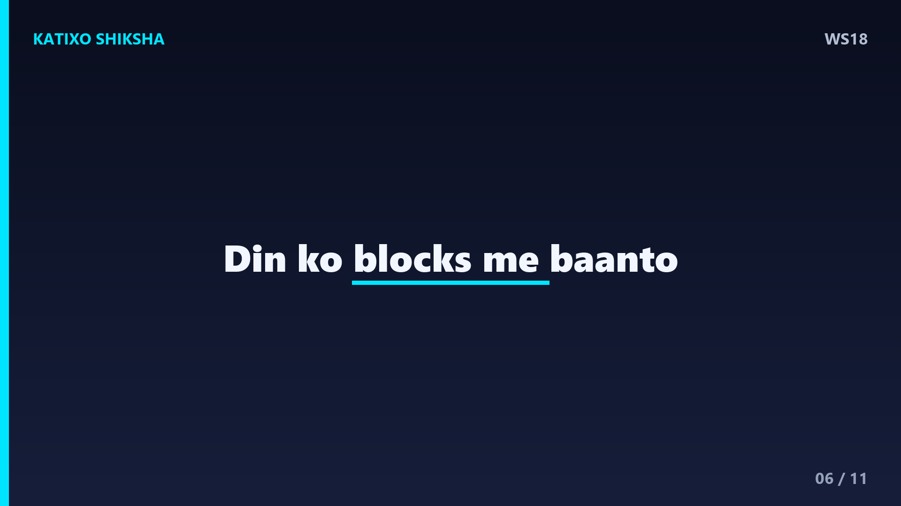
Slide 6अब एक practical technique — इसे कहते हैं time-blocking. अपने दिन को टुकड़ों में बाँट दो। जैसे सुबह का एक घंटा पढ़ाई के लिए, फिर आधा घंटा exercise के लिए। जब हर काम का एक fixed समय होता है, तो दिमाग बहाने नहीं बनाता। एक paper पर लिखो — कल मुझे ये तीन ज़रूरी काम करने हैं। सिर्फ़ तीन। जब तुम priority तय करते हो, तो time अपने आप तुम्हारे control में आने लगता है।
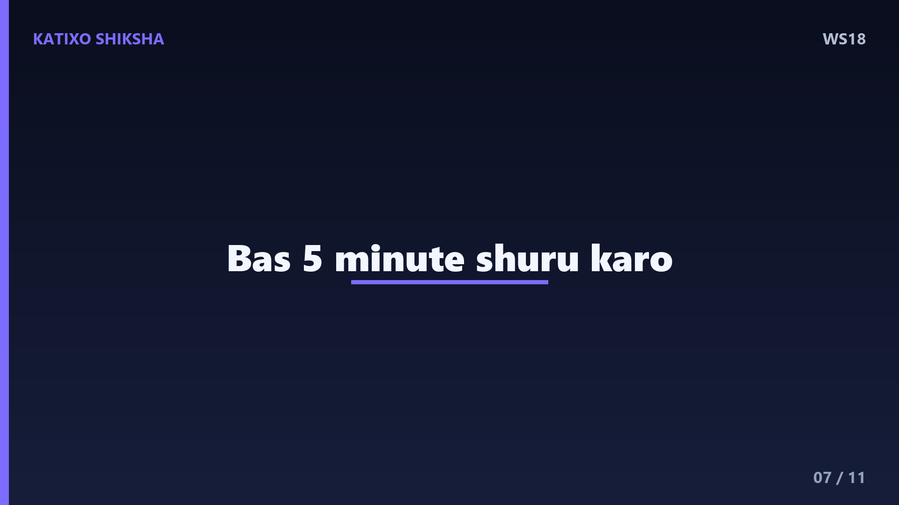
Slide 7Technique नंबर दो — दो मिनट का rule. अगर कोई काम दो मिनट में हो सकता है, तो उसे अभी कर दो, टालो मत। और बड़े कामों के लिए एक trick — सिर्फ़ पाँच मिनट शुरू करो। अक्सर शुरू करना ही सबसे मुश्किल होता है, पर एक बार शुरू कर दो तो काम अपने आप चलने लगता है। याद रखो, perfect वक़्त कभी नहीं आता — आज ही, अभी ही सही वक़्त है।
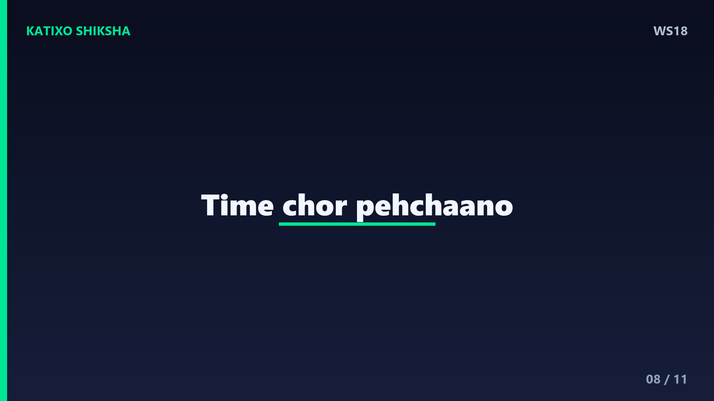
Slide 8एक ज़रूरी बात — time बर्बाद करने वाली चीज़ों को पहचानो। घंटों बिना सोचे phone चलाना, फ़ालतू की बहस, दूसरों से comparison — ये सब तुम्हारा कीमती time चुपके-चुपके चुरा लेते हैं। दिन के अंत में खुद से एक सवाल पूछो — आज मैंने अपना time कहाँ लगाया? अगर ईमानदारी से जवाब दोगे, तो तुम्हें खुद पता चल जाएगा कि कहाँ बदलाव की ज़रूरत है।
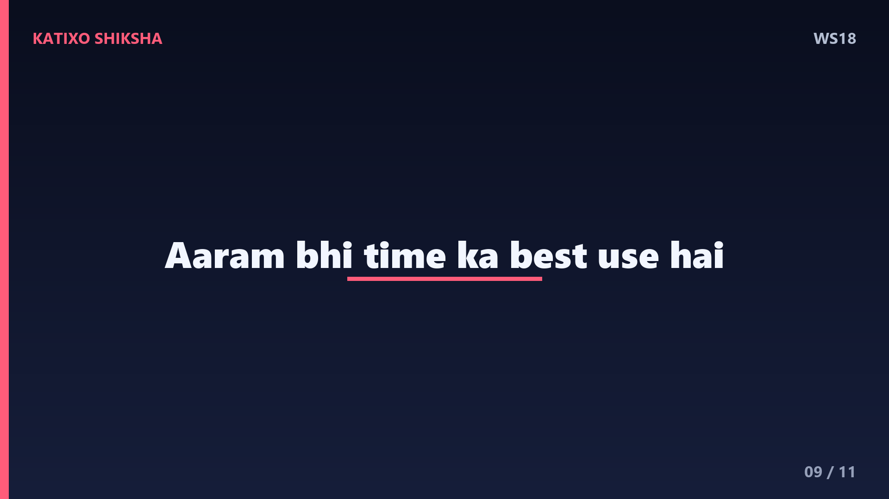
Slide 9पर दोस्तों, एक balance भी ज़रूरी है। Time का सही उपयोग का मतलब ये नहीं कि तुम मशीन बन जाओ। आराम करना, अपनों के साथ बैठना, हँसना — ये भी time का सबसे अच्छा उपयोग है। असली बात ये है कि तुम जान-बूझकर अपना time चुनो, बेमन से उसे बहने मत दो। जो लोग time के मालिक बनते हैं, वो ज़िंदगी के भी मालिक बन जाते हैं।
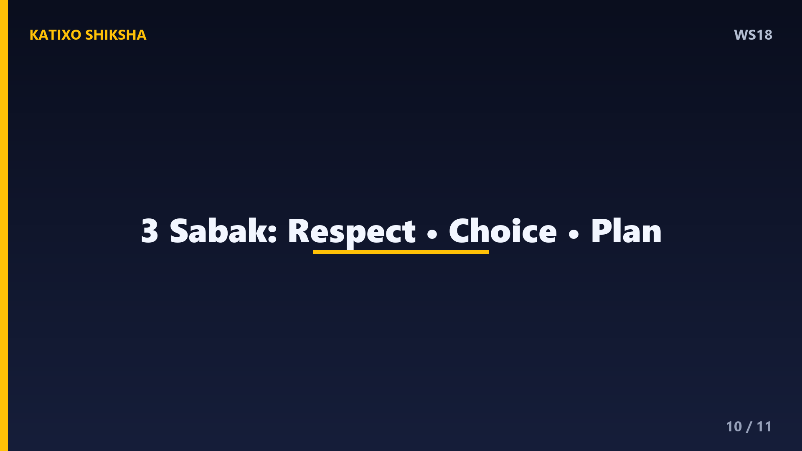
Slide 10चलो आज की तीन सबसे बड़ी सीख याद कर लें। पहली — time तुम्हारी सबसे limited और कीमती दौलत है, इसे respect दो। दूसरी — हर पल एक choice है, बाद में नहीं, अभी शुरू करो। और तीसरी — अपने दिन को plan करो, time-blocking और दो मिनट के rule से अपने time के मालिक बनो। ये छोटी आदतें तुम्हारी पूरी ज़िंदगी की दिशा बदल सकती हैं।
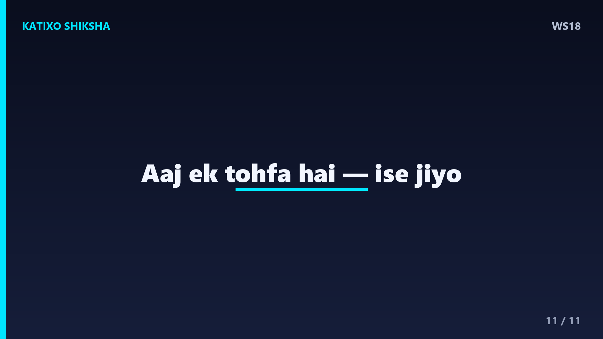
Slide 11दोस्तों, याद रखना — एक दिन हम सबका time खत्म हो जाएगा, ये तय है। पर सवाल ये है कि उस दिन तक तुम अपने time से क्या बनाओगे। आज से एक वादा करो खुद से — मैं अपना एक-एक पल सोच-समझकर जिऊँगा। आज का दिन एक तोहफ़ा है, इसलिए इसे present कहते हैं। इसे बर्बाद मत करो, इसे जियो। Like, share, aur Katixo KhojLab ko subscribe karna mat bhoolna. Milte hain agli kahani mein!